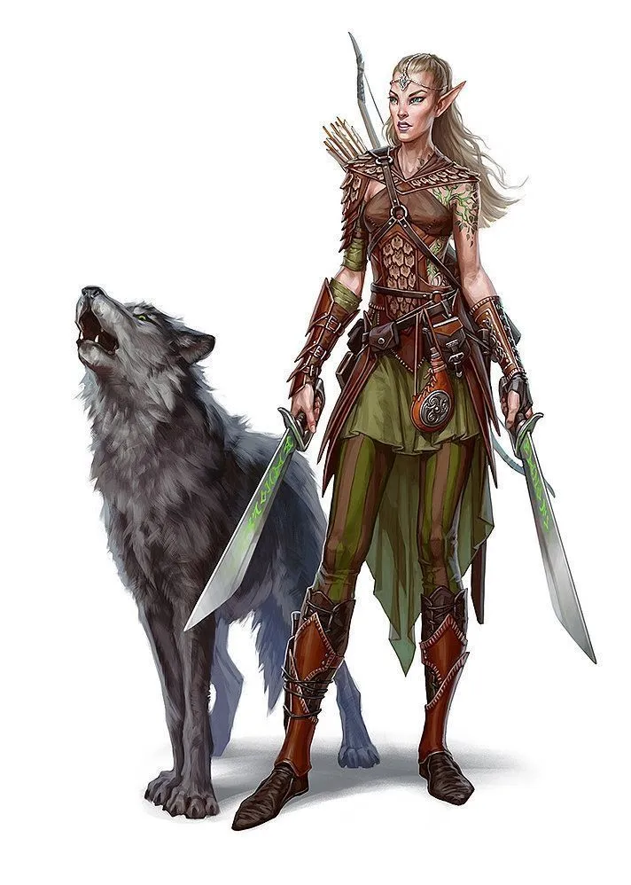

Objective: To utilize my skills as an expert tracker and hunter to protect and defend the lands of Faerun.

Summary
As a tenured Elven Ranger, I possesses an unmatched understanding of the natural world and a have deep respect for
all forms of life. I have developed honed archery and tracking skills through years of
practice and am an expert in navigating difficult terrain. You will find me fiercely
loyal to my allies and will stop at nothing to ensure their safety.
Experience
Served as a scout and tracker for the Elven army during the War of the Spider Queen,
contributing to several key victories.
Led a successful hunt for a group of rampaging Owlbears, saving a nearby village
from destruction.
Tracked down a group of Orc raiders who had been terrorizing a local caravan route,
leading to their capture and imprisonment.
Skills
Expert archer with exceptional accuracy and range.
Highly skilled tracker with a deep understanding of animal behavior and tracking techniques.
Proficient in survival skills, including hunting, foraging, and building shelters.
Proficient in stealth and infiltration, able to move silently and remain unseen.
Skilled in hand-to-hand combat and experienced with a variety of weapons.
Education
Trained in the ways of the Elven Rangers from a young age, learning the art of archery and
tracking from seasoned experts.
Completed a rigorous survival training course in the wilderness of the Neverwinter Forest,
honing her skills in harsh and unforgiving conditions.
Certifications
Certified in Wilderness First Aid, able to provide essential medical care in the field.
Certified in Animal Handling, able to safely approach and interact with a wide variety of creatures.